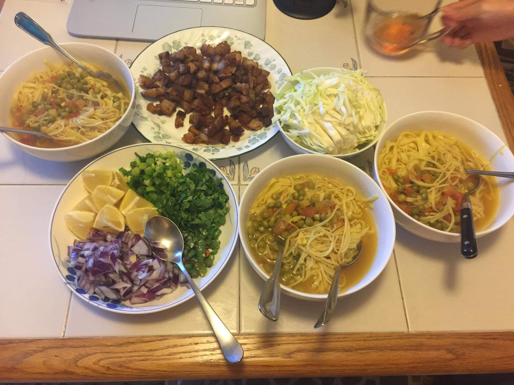
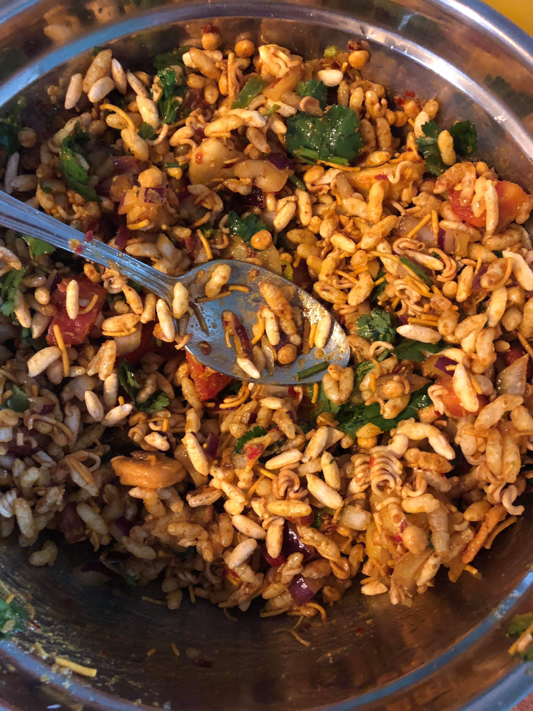

I am from Nepal, small landlocked country between India and china.Our food and culture are inspired mostly from our neighboring countries.Foods from my hometown are one of my best childhood memories. Whenever I crave for my favorite food from my hometown, I try to create myself with available ingredients here.I would like to share two of my all time favorite foods that are widely popular back in my hometown.

This noodles can be made easily at home.We need to boil some noodles, drain the water and keep it aside. It is better to add some oil in the water before boiling noodles so they don't stick.
Then chopped different vegetables like cabbage,green onions, green chilli, cilantro,limes.Saute some onions, ginger,garlic, green peas or chickpeas in a deeper pan pour some broth(i like mixing half and half with water). On a separate pan, fry some meat of your choice. Fry it untill meats are crispy( Crispier taste better).
As shown in the mixture, add some noodles in a bowl than add some soup. And add rest of the toppings and enjoy it when it is warm. It is perfect soup for rainy days.

This is another popular snacks in Nepal. It is made mainly from puffed rice, toasted noodles and other readymade mix that can be available in any Indian or Nepali grocery store.
Soak some dried chickpeas or dried green peas over night,it can be used raw or boiled depending on your preferences. Boil some potatoes and peel off the skin. Chop those boiled potatoes,red onions, green chilli, cilantro,ginger, garlic and mix in a bowl with some mustard oil. Add soaked chickpeas or green peas, some turmeric, chilli powder, sesame powder,other spices like cumin poder and corriander powder in the same bowl and mix them properly.After mixing all this ingredient, add some puffed rice, toasted noodles and other readymade mix. Adding some potato chips are optional but potato chips makes it more tastier.
chatpate is now ready to serve. These snacks are good for any occasion as an appetizer, during movie time or during outdoor activities.